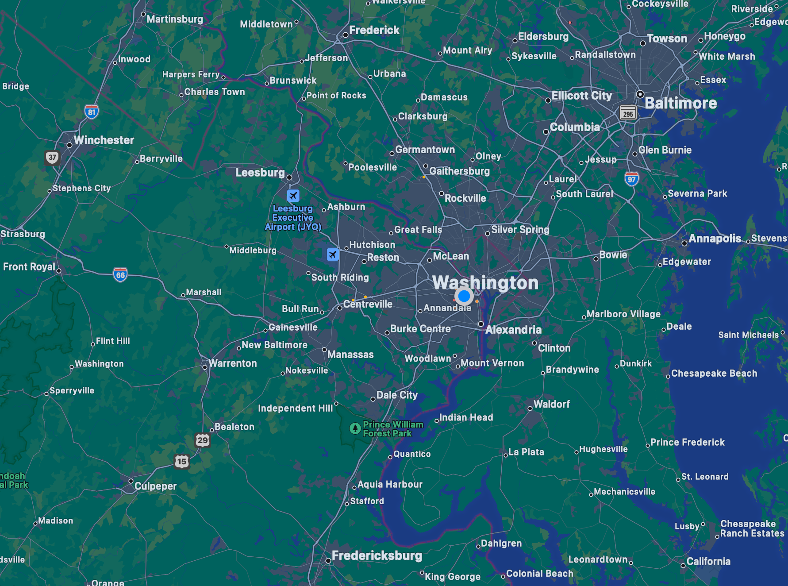

Our Story
At JPC Best Movers, our journey began with a vision of simplifying the moving experience
while prioritizing customer satisfaction above all else. This vision was brought to
life by our dedicated founder, Jose Renderos.[Few sentences about the backstory of the company and the founder's motivation to start it.
Highlight any personal experiences or challenges that inspired the creation of the company.]
Our Mission
Jose has always believed in the power of providing exceptional service
and building strong relationships with clients. With 10 years of experience being a mover,
he understood the pain points and challenges people face when it comes to moving,
and he was determined to create a solution that truly made a difference.
Jose's passion for excellence and commitment to integrity are deeply ingrained in
every aspect of our company. We strive to exceed expectations by offering
reliable, efficient, and personalized moving services tailored to meet the
unique needs of each customer.
Located In

JPC Best Movers is based in Arlington, VA, serving as a central hub
for its comprehensive moving services across the DMV (District of
Columbia, Maryland, Virginia) Area. Although rooted in Arlington, the
company efficiently extends its exceptional moving solutions to
various cities throughout the DMV region. With a dedication to
excellence and a wide-ranging service area, JPC Best Movers addresses
the unique relocation requirements of clients, delivering a seamless
and hassle-free moving experience across the diverse landscapes of the
DMV. Including cities like:
- Annapolis
- Fredricksburg
- Frederick
- Winchester
- Alexandria
- Baltimore
- Waldorf
- Manassas